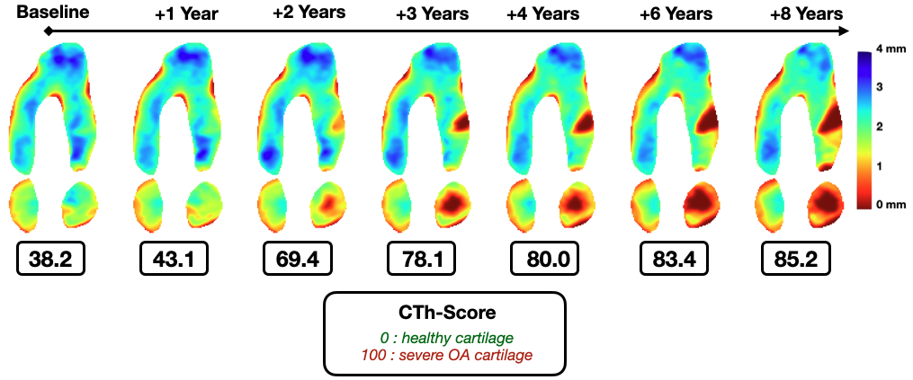
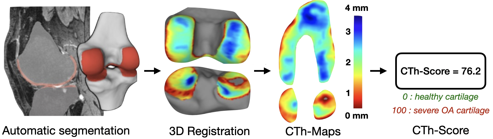

Automatic framework for evaluating osteoarthritic cartilage severity: high-resolution cartilage thickness mapping and scoring
Paul Margain1,
Patrick Omoumi2,*,
Julien Favre1
1 Lausanne University Hospital and University of Lausanne (CHUV-UNIL), BioMotion Center, Switzerland
2 Lausanne University Hospital and University of Lausanne (CHUV-UNIL), Diagnostic and Interventional Radiology, Switzerland

Figure 1: Overview of the automatic framework. Raw MRI inputs are segmented using a 3D-UNet to generate Cartilage Thickness Maps (CTh-Maps), which are then processed by a ResNet to output a severity score (CTh-Score).
Abstract
Objectives: To develop and validate an automatic, scalable framework for assessing the femoro-tibial osteoarthritic cartilage severity using high-resolution cartilage thickness maps (CTh-Maps) and a cartilage thickness scoring system (CTh-Score).
Methods: The Osteoarthritis Initiative (OAI) cohort of 4796 subjects was analyzed. A 3D-UNet was trained to segment femoro-tibial bones and cartilages using MRI from baseline and follow-ups (1 to 8 years). CTh-Maps were created for each knee. A ResNet model trained on CTh-Maps assigned a CTh-Score ranging from 0 (healthy) to 100 (end-stage OA). Validity was assessed against expert evaluations (MOAKS, KL grade).
Results: The framework generated the "OAI CTh-Maps" dataset. Both CTh-Maps and CTh-Score showed excellent reproducibility (ICC>0.98). The CTh-Score demonstrated strong correlations (r=0.81) with expert assessments and detected changes significantly up to 6 years prior to radiographic progression.
Key Findings
- High Reproducibility: Both the Maps and the Score achieved an ICC > 0.98 in test/retest setups.
- Early Detection: The CTh-Score consistently detected cartilage degeneration progression up to 6 years before radiographic progression (KL grade) became apparent.
- Scalability: The framework is fully automatic and end-to-end, transforming raw MRI into standardized maps and quantitative scores.
- Trajectories: Analysis reveals three phases of progression: slow initial progression, accelerated degradation, and deceleration in end-stage disease.

Figure 2: CTh-Score trajectories illustrating the sensitivity to OA structural progression over time.
Discussion & Impact
The originality of this work lies in the development of a fully automatic framework that transforms raw MRI images into standardized CTh-Maps and a continuous score of severity.
Critically, the variability in trajectories aligns with cartilage pathophysiology. Identifying the "window of opportunity" where progression accelerates is vital for clinical trials and therapeutic interventions. The CTh-Score serves as a valuable tool for identifying this window during screening phases.
Citation
If you use this code or dataset in your research, please cite our paper:
@article{Margain2025Automatic,
title={Automatic framework for evaluating osteoarthritic cartilage severity: high-resolution cartilage thickness mapping and scoring},
author={Margain, Paul and Omoumi, Patrick and Favre, Julien},
journal={medRxiv},
year={2025},
doi={10.1101/2025.11.03.25339377},
publisher={Cold Spring Harbor Laboratory Press}
}